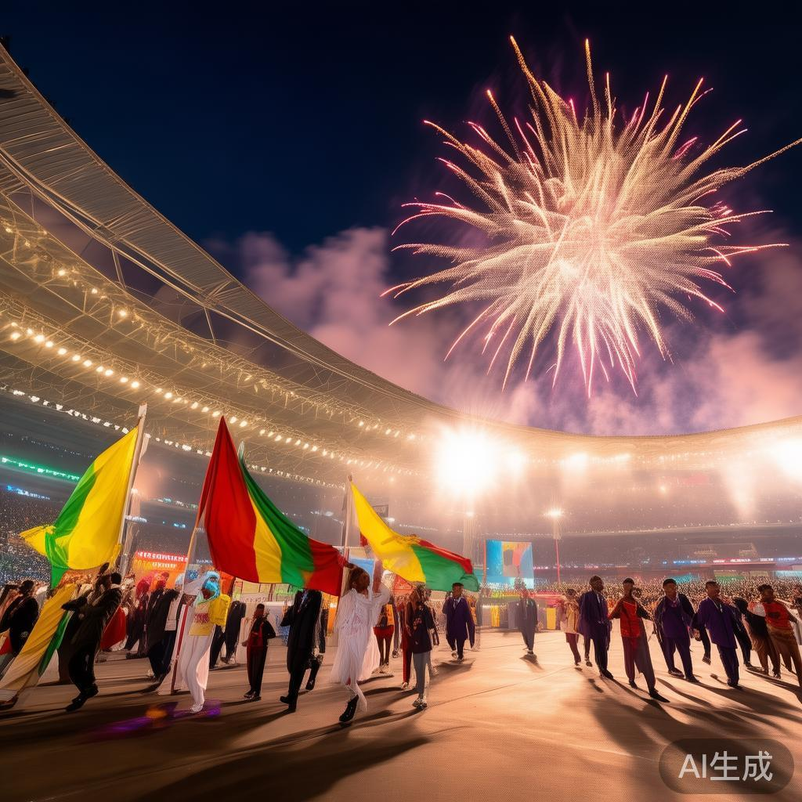
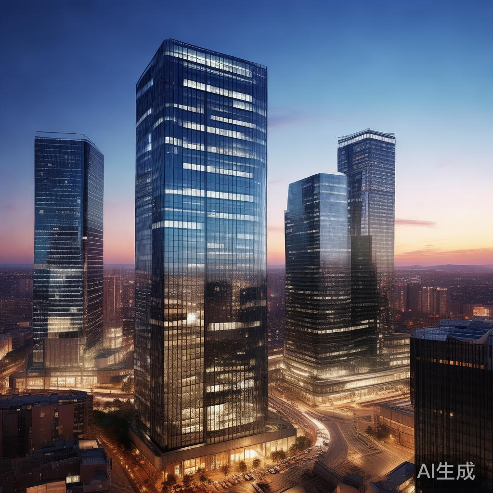
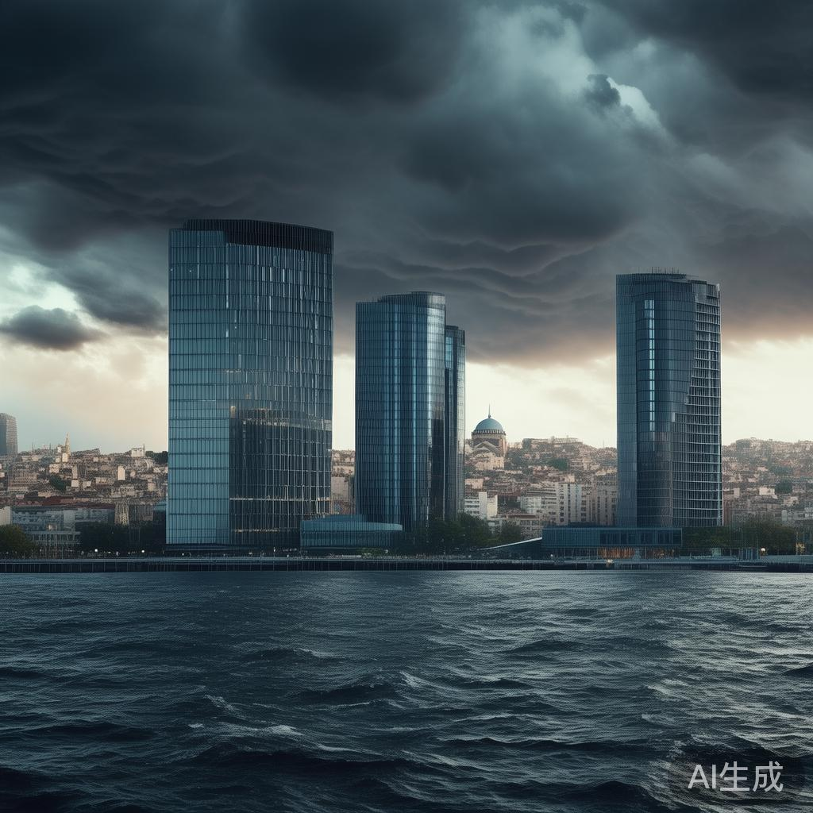
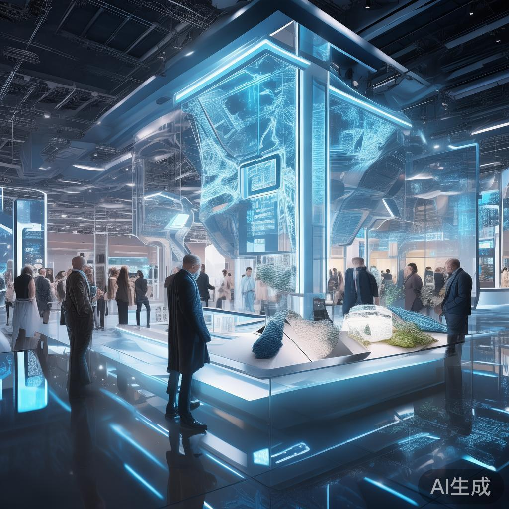

01
特朗普与内塔尼亚胡通话商讨恢复对伊打击 鲁比奥称尚未决定
美国总统特朗普周六与内塔尼亚胡通电话，商讨恢复对伊朗军事行动的方案，此前已与高级军事指挥官讨论作战计划。美国国务卿鲁比奥同日表示，特朗普尚未决定是否发动新打击。伊朗谈判代表10月31日在多哈与卡塔尔斡旋方继续会谈，探讨化解战事的出路；伊朗方面还称沙特、土耳其、巴基斯坦官员在德黑兰四方会谈中对以色列采取坚定立场。
国际
美国总统特朗普周六与内塔尼亚胡通电话，商讨恢复对伊朗军事行动的方案，此前已与高级军事指挥官讨论作战计划。美国国务卿鲁比奥同日表示，特朗普尚未决定是否发动新打击。伊朗谈判代表10月31日在多哈与卡塔尔斡旋方继续会谈，探讨化解战事的出路；伊朗方面还称沙特、土耳其、巴基斯坦官员在德黑兰四方会谈中对以色列采取坚定立场。
11月3日美国中期选举临近，众议院435席全部改选。无党派选举分析机构库克政治报告认为，共和党已几乎无望保住众议院控制权，或仅能赢得198至208席，民主党有望翻转。2024年投票支持特朗普的选民中约五分之一对其执政表现不满。预测市场与民调的分歧也引发关注，分析指出二者衡量指标并不相同。
10月31日，法国连续第三个周末爆发全国性抗议游行，本轮参与人数较前两个周六有所减少。据法国内政部通报，全国抗议人数约32万，其中巴黎约7万；工会方面则称全国动员约50万人上街。抗议者不满生活成本高企、公共服务吃紧，社会矛盾持续发酵。

当地时间10月31日晚，第四届夏季青年奥林匹克运动会开幕式在塞内加尔贾姆尼亚贾市的阿卜杜拉耶·瓦德体育场举行，塞内加尔总统法耶宣布开幕。贾姆尼亚贾位于首都达喀尔以东约30公里。这是奥林匹克系列赛事首次在非洲大陆举行，具有里程碑意义。
据日本气象厅消息，11月1日清晨7时15分左右，日本三重县东南海域发生6.1级地震，最大震感为震度3，震源深度350千米。另据巴拿马大学地球科学研究所初步报告，10月31日10时50分，巴拿马南部洛斯桑托斯省托诺西以东约18公里处发生6.1级地震，震源深度10公里。
针对网传肯尼亚一栋18层在建楼房坍塌由中方承建的说法，经核实并不属实：项目开发商和主承包商均为肯尼亚公司，中企并未承建该项目，而是在事故发生后参与现场救援。此前有不法分子利用中国路桥柬埔寨在建项目散布不实招聘信息并收取高额费用，公司也已发布声明辟谣。
韩国公布10月出口同比增长93.7%，大幅高于市场预期的89.3%；10月进口额同比增长36%，低于预期的39.9%。出口数据超预期走强，显示半导体等主导产业景气延续，为四季度韩国经济开局提供有力支撑，也印证全球科技产品需求仍处高位。

四大行最新三季报显示，利息净收入增速成为共同亮点，均实现10%左右的同比增长。科技金融成为竞逐重点：农行前三季度科技型企业贷款、科技型中小企业贷款增速分别为28%和34%，同时有序推进AIC股权投资试点，累计设立试点基金33只，基金投资86个科技创新项目。
受美联储进一步加息预期升温等因素影响，国际金价10月30日跌至一年来新低：COMEX黄金期货收跌3.63%报3884.90美元/盎司，伦敦金现跌3.61%报3875.19美元/盎司，双双失守3900美元关口。国内金饰克价年内已回落近550元，投资黄金升温。专家认为，金价失守3900美元更多具有心理和技术意义，短期或维持震荡放大态势。
中信证券发文称，主要指数从高点回撤，日均成交额从6月的3.1万亿元收缩至1.6万亿元上下，两融余额回落，短期情绪偏冷。但资金动作未停：7月以来股票型ETF累计流入超7000亿元；10月以来逾200家A股公司披露回购或增持计划，金额上限合计超250亿元。沪深300股息率约3%，较10年期国债收益率高出近140个基点；1至9月高技术制造业利润增长52%，年底中央经济工作会议将带来更多方向性信号。

土耳其总统埃尔多安任命税务稽查委员会主席阿特哲担任资本市场监管机构负责人，处置震动金融市场的投资基金危机，同时任命资本市场委员会副主席及委员。本轮危机始于部分投资基金无法兑付赎回申请，引发投资者集中出逃并造成股市下跌，批评人士质疑监管机构防范不力，土司法部长称事件类似庞氏骗局。
10月31日，南京市住房保障和房产局等五部门联合印发实施意见，从商品住房预售管理、现房销售到融资支持等九个方面作出制度安排，自发布之日起施行。意见提出有序实施现房销售：2026年8月28日后新发布出让公告的商品住房项目，优先选择现房销售，让购房者所见即所得。
据知情人士透露，Meta正加紧研发面向家庭场景的机器人，已与中国机器人企业傅利叶智能合作开发出一款人形机器人原型，仅用三个月完成，重约106磅，内部代号Max，第二代产品研发已经启动。Meta将人形机器人视作其Muse智能体的实体载体，可执行各类居家任务，最终有望对外推出。
OpenAI首席执行官奥特曼近日在播客节目表示，从全球资源配置角度看，大量DRAM被配置在个人电脑中且仅约5%的时间处于使用状态，未得到充分利用，是一种低效的资源分配方式。在全球AI算力竞争加剧、内存供给紧张的背景下，这一观点再度引发业界对内存资源调度效率的讨论。
深南电路近日在机构调研时表示，2026年三季度公司广州生产基地产能稳步释放，产品线能力持续提升：BT类封装基板产能爬坡稳步推进；FC-BGA类封装基板已具备26层及以下产品的批量生产能力，30层及以上产品的技术研发及打样工作正按期推进，高端封装基板国产化进程加快。

10月31日，2026世界城市日专题会议——沿沪宁城市协同创新日活动在上海普陀区举行，第二批25个沿沪宁创新联合体正式亮相。创新联合体由沿线城市共同推动组建，聚焦新能源、新材料等领域，致力于打造协同创新生态、产业集群高地和产创融合样板。
人民日报刊文评述，10月30日国家主席习近平在北京同来华进行国事访问的德国总统施泰因迈尔举行会谈，并会见来华进行工作访问的瑞士联邦主席帕姆兰。两场重要活动立足双边、放眼欧洲，既回望中德、中瑞关系积淀的互信根基，也释放出坚持对话、扩大合作的积极信号。同期中国与瑞士签署自贸协定升级议定书。
中央气象台11月1日06时继续发布大风蓝色预警：预计1日08时至2日08时，内蒙古中西部、山西北部、河北北部、北京西部、辽宁西部、西藏北部、青海南部等地部分地区有5至7级风，阵风8至9级；渤海北部、渤海海峡、黄海大部、东海北部海域将有7至8级、阵风9至10级大风。
国家电影局、体育总局近日联合印发通知，启动跟着电影去运动行动，推动电影与体育双向赋能。在体验消费、文化消费持续升温的当下，这场跨界牵手被视为丰富大众精神文化供给、激活文体消费新增长点的重要抓手，行业需打通内容、场景与人群，避免简单叠加。
据广药集团消息，旗下达安基因研发的基孔肯雅病毒抗原检测试剂盒（胶体金法）通过国家药监局三类医疗器械注册审批，注册证编号为国械注准20263402223。这是国内首款获批上市的基孔肯雅病毒抗原检测试剂盒，将显著提升相关疫情的检测效率和防控能力。
💬 评论区